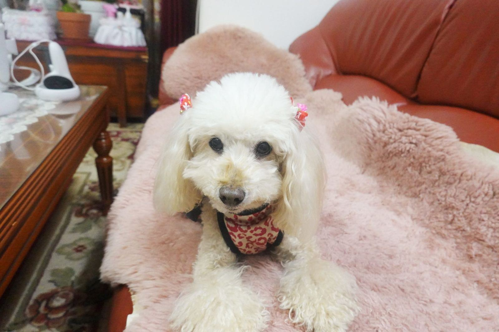

Behandlingar
I andra halvan finns foderboden, där vi säljer foder, tuggben och reflexvästar. Sommartid kan du även boka hästtvätt på spolplattan bakom stallet. De flesta kunder kommer från Eksjö, Nässjö och Tranås, och många har kommit hit i femton år.
Vad har du med dig i bilen?

Trimning av alla raser
Vi klipper och trimmar allt från västgötaspets till pudel. Många av kunderna är gårdshundar som är vana vid lera men inte vid fön.
Därför börjar vi alltid med en lugn genomborstning på bordet innan badet.

Jakthundar
Inför älgjakten i oktober putsar vi tassar, öron och fransar på spaniels, settrar och stövare så att de inte samlar is och kvistar.
Under jaktsäsongen har vi tider redan klockan sju.

Foderboden
Vi säljer torrfoder, frystorkat kött från en gård i Aneby och tuggben från viltslakteriet i Hult. Ingen nätbutik, bara det vi själva tror på.
Stamkunder får tio procent rabatt på foder.

Hästtvätt
Från maj till september har vi en spolplatta med varmvatten bakom stallet. Vi tvättar, schamponerar man och svans och reder ut tovor.
Passar inför tävling eller när hagen har gjort sitt.
Från grusvägen till foderboden
- 1

Ring på morgonen
Karin svarar 7–9 och bokar in dig, oftast inom en vecka.
- 2

Parkera vid hagen
Det finns plats för släp och hästtransport på gårdsplanen.
- 3

Trim i ladugården
Hunden borstas, badas och klipps i salongen medan du handlar i foderboden.
- 4

Betala och åk hem
Swish eller kort vid disken. Kaffet bjuder Bengt på.